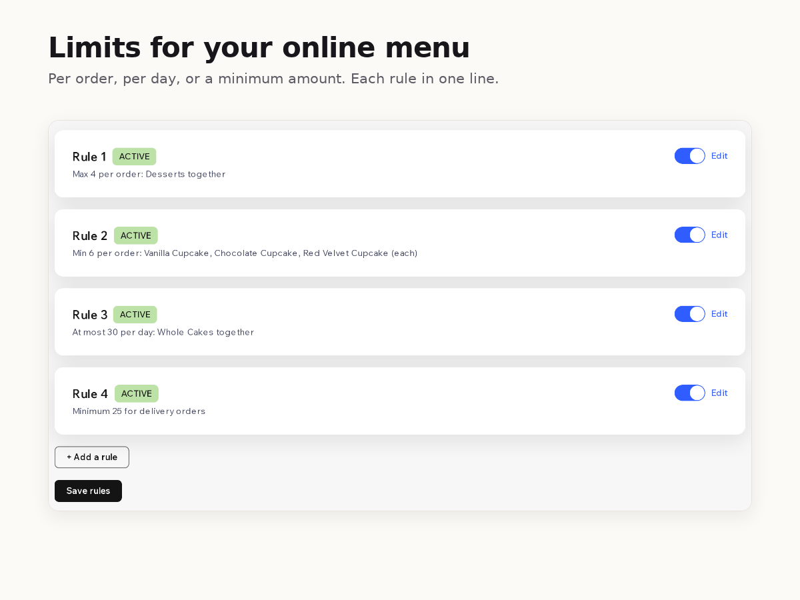

Menu Limits
Cap dishes per order and per pickup day
- Min and max per dish or per menu section in each order
- Daily caps per pickup or delivery day, counted from real orders
- Your own message in the cart and at checkout, as a stop or a warning
- A minimum order amount for pickup or for delivery

What it does
A bakery that can make 30 cakes for Saturday has no way to tell its online menu so. Orders keep coming after the 30th, and someone has to call customers to cancel.
Menu Limits adds the limits your online ordering is missing. Pick dishes or whole menu sections from your own menu and set a minimum, a maximum or both for each order: no more than 4 desserts, cupcakes in sixes or more. With Premium you can also cap how many of a dish or a section you sell for one pickup or delivery day, and set a minimum order amount for pickup or for delivery.
Daily caps count paid and pending orders for that day in your restaurant's time zone, including preorders placed up to 30 days ahead. ASAP orders count for today.
When a cart breaks a rule, your customer sees your message in the cart and at checkout and can't place the order until it's fixed. You can also set a rule to warn only. Orders already placed never change.
If a check fails or runs slow, the order goes through, so a broken rule never stops you taking orders.
The free plan checks 2 per-order rules. Premium checks every rule, adds daily caps and the minimum order amount, and keeps a log of the checkouts your rules stopped.
Price
Free
- 2 per-order rules
- Min and max per dish or menu section
- Your own message, stop or warning
Premium
$8/month, $80/year ($6.67/month billed yearly)
- Unlimited rules
- Daily caps per pickup or delivery day
- Minimum order amount for pickup or delivery
- Log of blocked checkouts